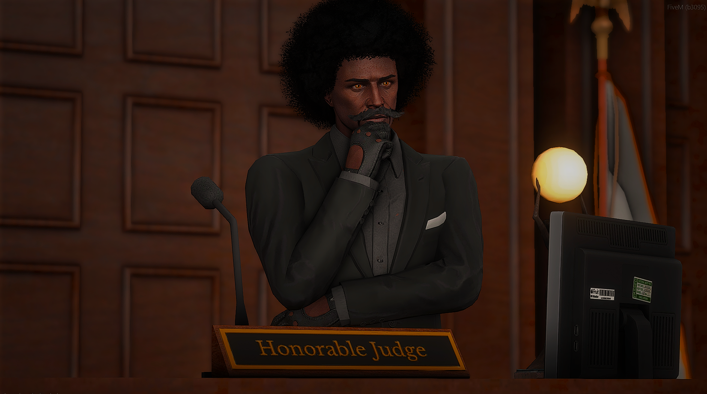
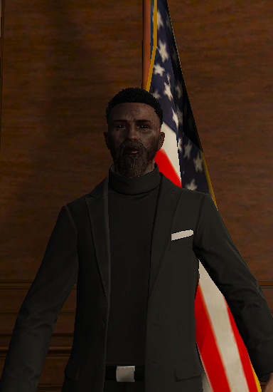

وزارة العدل
أعضاء وزارة العدل
تعرف على جميع أعضاء وزارة العدل والقيادات والقضاة والنيابة العامة والمحامين.
القيادة

رئيس المحكمة
حسن الزهراني
منذ تأسيس أولد سكول في مرحلتها الثانية، تولّى قيادة المنظومة القضائية والإشراف على تطوير الأنظمة واللوائح القضائية وترسيخ مبادئ العدالة والنزاهة والاستقلال القضائي.
القاضي
ماركوس هير
يشرف على القضايا والجلسات وإصدار الأحكام داخل المحكمة.
القضاة

باتريك كرو
قاضي (أ)نواب القضاء
لا يوجد صورة
خالد الحربي
نائب القاضي (أ)
رومان رينز
نائب القاضي (ج)النيابة العامة
لا يوجد صورة
دغش الحانوتي
المدعي العام
محمد يوسف
المدعي العام (ب)المحامون
لا يوجد صورة
حسن سكرج
محامي (أ)
لا يوجد صورة